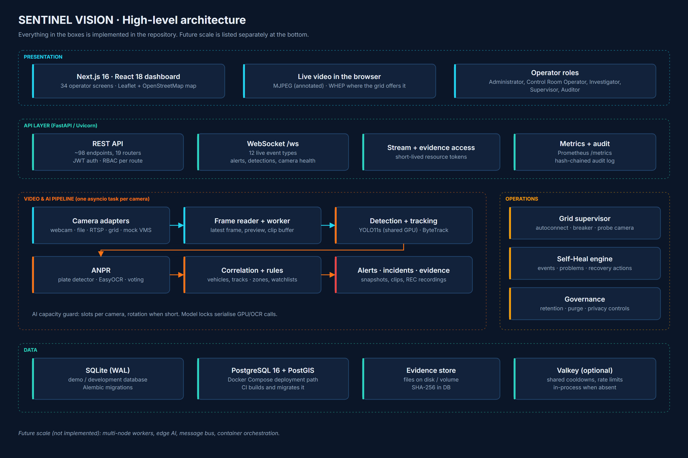
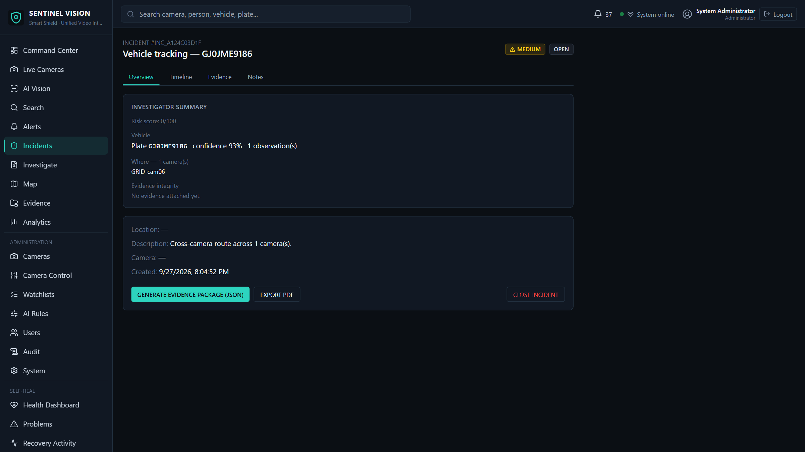
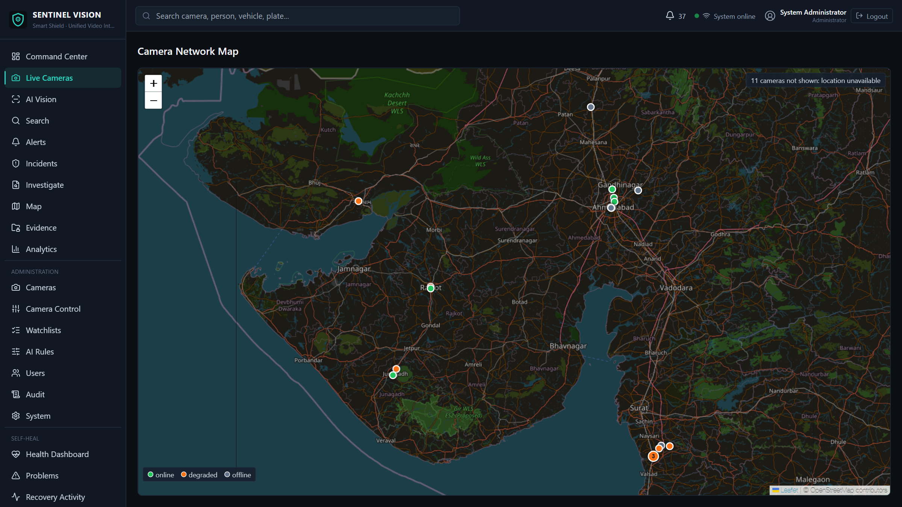

Labels used throughout: CURRENT implemented in the repository · DEMONSTRATED shown working on real or recorded camera footage · FUTURE planned, not implemented · LIMITATION known issue.
SENTINEL VISION is a working CCTV intelligence platform. It registers cameras from different sources in one catalogue, runs AI analytics on their video, turns detections into rule-based alerts and incidents, captures tamper-evident evidence, and gives control-room operators one web dashboard for live monitoring, mapping and investigation.
The system runs today as a FastAPI backend with a per-camera asyncio pipeline, Ultralytics YOLO11s detection on a shared GPU model, ByteTrack tracking, a plate detector with EasyOCR for number plates, and a Next.js 16 dashboard. It has been exercised against a real 30-camera Sentinel Grid catalogue as well as local video, webcam and RTSP sources.
This document describes the architecture as it exists, the measured behaviour, and the known limitations. Scale-out items (multi-node workers, edge AI, message bus) are described in Section 20 and are not implemented.
| Capability | What SENTINEL VISION does | Status |
|---|---|---|
| Unified camera registry | One catalogue for webcam, video file, RTSP, Sentinel Grid and mock VMS sources, with catalogue sync, status and health per camera. | CURRENT |
| AI video analytics | Person and vehicle detection (YOLO11s), multi-object tracking (ByteTrack), plate localisation and OCR (EasyOCR), switchable per camera. | DEMONSTRATED |
| Rules and events | Restricted zones, watchlists, loitering and a risk score produce alerts; CRITICAL alerts open or join incidents. | CURRENT |
| Evidence | Snapshots, event clips and operator REC recordings, hashed at capture, verified on access, packaged per incident. | DEMONSTRATED |
| GIS map | Leaflet/OpenStreetMap camera map and vehicle journey maps; 19 of 30 grid cameras placed. | CURRENT |
| Self-Heal | Camera health states, reconnect with backoff, grid-wide breaker, database retry, recovery events visible to operators. | CURRENT |
| Security | JWT login, five roles with per-route RBAC, short-lived stream/evidence tokens, hash-chained audit log. | CURRENT |

The system has four tiers. The presentation tier is a Next.js 16 / React 18 web application with 34 operator screens. The API tier is FastAPI: about 98 REST endpoints across 19 routers, a WebSocket at /ws, and token-protected stream and evidence routes. The pipeline tier runs one asyncio task per connected camera inside the backend process. The data tier is a relational database (SQLite in the demo, PostgreSQL + PostGIS in the Docker Compose deployment), an evidence file store, and an optional Valkey (Redis-protocol) store for shared runtime state.
| Component | Responsibility | Code |
|---|---|---|
| Camera adapters | Open and read each source type; RTSP transport and buffer options; grid URL built in memory only. | pipeline/adapters.py, source.py |
| Grid supervisor | Catalogue discovery, autoconnect, staggered connects, escalating breaker with a probe camera. | pipeline/supervisor.py, sentinel_grid.py |
| Frame reader | Dedicated thread per camera keeps only the latest frame; grabs without decoding when nothing needs pixels. | pipeline/frame_reader.py |
| Camera worker | Per-camera loop: health state, preview, clip ring buffer, AI, persistence, heartbeat. | pipeline/worker.py |
| AI capacity guard | Grants AI slots per camera; rotates slots when more cameras want AI than the hardware can serve. | pipeline/ai_capacity.py |
| Detector / tracker | One shared YOLO11s model, one ByteTrack tracker per camera. | pipeline/detector.py |
| ANPR | Plate localisation, preprocessing variants, EasyOCR, per-track vote. | plate_detector.py, anpr.py, plate_tracker.py |
| Correlation | Vehicles, plate sightings, tracks, cross-camera journeys, appearance similarity. | pipeline/correlate.py, appearance.py |
| Rules engine | Zones, watchlists, loitering, cooldowns, risk score, alert and incident creation. | pipeline/rules_engine.py, risk.py |
| Clips / recorder | Event clips around alerts; operator REC button records annotated MP4 evidence. | pipeline/clips.py, recorder.py |
| Self-Heal | Failure classification, events, open problems, recovery reporting. | app/self_heal/ |
| Security | Password hashing, JWT, resource tokens, RBAC dependencies, audit chain. | security.py, audit.py |
CURRENT Cameras live in one registry table with code, name, location, coordinates, source type and AI switches. Adapters hide how each source is read, so the rest of the pipeline sees the same frames whatever the camera is.
| Source | How it is integrated | Status |
|---|---|---|
| Webcam | Local device index through OpenCV. | CURRENT |
| Video file | Uploaded through the dashboard, validated, looped as a continuous feed. | CURRENT |
| RTSP | OpenCV/FFmpeg with configurable TCP or UDP transport and receive buffer. | CURRENT |
| Sentinel Grid | Cookie login to the grid, catalogue sync of 30 cameras, RTSP over UDP, WHEP live video where offered. Credentials only in .env, never logged or returned. | DEMONSTRATED |
| Mock VMS | Synthetic feed that proves the generic VMS adapter interface. | CURRENT |
| ONVIF / other VMS | Interface stub only; a new VMS is added as another adapter behind the same interface. | FUTURE |
Each connected camera gets one asyncio task and one reader thread. The reader keeps only the newest frame, so a slow consumer never builds a backlog. When nobody watches the camera and AI is off, it grabs packets without decoding them, which measured 5.9 ms per 1080p HEVC frame against 12.9 ms for a full decode.
CURRENT Detection uses Ultralytics YOLO11s (COCO classes: person, car, motorbike, bus, truck) at 960 px. YOLOv8s was the earlier baseline and was replaced after benchmarking. One model instance is shared across cameras on the GPU under a lock; each camera keeps its own ByteTrack tracker, so track IDs never mix between cameras. Measured GPU inference was about 24 ms per frame on the development laptop (RTX 3050 Ti).
Selective analytics. Person, vehicle and ANPR analytics are switched on per camera. When more cameras want AI than the hardware can serve, the capacity guard rotates AI slots between them (60 s turns) instead of starving some cameras permanently.
docs/AI_ACCURACY.md). The reference labels were built from agreeing model runs and reviewed by an AI assistant, not trained annotators, so these figures are an engineering comparison between configurations, not a certified accuracy.OCR runs before any database write for the detection, so slow OCR never holds the database write lock.
| Rule | Behaviour |
|---|---|
| Restricted zone | A confident detection inside an active zone, within its schedule, seen for at least two frames of the same track. |
| Watchlist plate | Fires only for an active watchlist entry (the entry is the authority, not a cached flag). Severity is capped at HIGH until the plate read is confident and corroborated. |
| Loitering | Dwell time in a zone above the zone's threshold, where an active loitering rule targets it. |
| Risk score | Combines zone severity, watchlist priority, plate confidence and vehicle history; it can raise severity, never lower a rule's CRITICAL. |
Cooldowns per camera, rule and track stop one object from raising the same alert every frame. With Valkey configured, cooldowns are shared across backend processes.
CURRENT An alert stores its reasons, severity, risk factors, detection, vehicle and snapshot, and is pushed to every dashboard over the WebSocket. Operators acknowledge, escalate or dismiss alerts, and feedback is recorded. A CRITICAL alert opens an incident or joins an open one for the same vehicle (or camera) within the correlation window, so one vehicle crossing four cameras becomes one incident whose title and priority grow with it. Incidents carry status, notes and a summary endpoint.

routers/governance.py, docs/PRIVACY_GOVERNANCE.md).CURRENT The map uses Leaflet with OpenStreetMap tiles. The Sentinel Grid catalogue supplies no coordinates, so camera positions were looked up once in OpenStreetMap (Nominatim and Overpass) from each camera's place name and stored in pipeline/grid_locations.json, with the precision of each point.
ST_DWithin on PostgreSQL and a haversine fallback on SQLite.
| Failure | Detection and recovery |
|---|---|
| Stream drop / read failure | Camera goes DEGRADED, then RECONNECTING with per-camera backoff; recovers on its own when frames return. |
| Grid-wide rejection | Breaker pauses all grid connects for 5 minutes, doubling on each repeat up to 60 minutes; after a pause one probe camera must connect before the rest try. This protects the grid account from connect storms. |
| Database lock | Commit/flush retry with rollback and reapply of the pending write; each lock recovery is recorded as a Self-Heal event. |
| Worker crash | Last-resort guard logs the traceback, marks the camera offline and frees its AI slot; other cameras are unaffected. |
| WebSocket drop | The dashboard reconnects on its own with bounded exponential backoff. |
Every failure is classified and stored as a Self-Heal event; repeated failures become an open "problem" with its history, shown on the Health Dashboard, Problems, Recovery Activity, Error Logs and Camera Health screens.
GET /api/audit/verify-chain detects any edited or deleted row.docs/THREAT_MODEL.md; CI runs CodeQL analysis.SQLAlchemy models cover cameras, detections, vehicles, plates, tracks, alerts, incidents (with alert links and notes), evidence, zones, rules, watchlists, users/roles, audit logs and Self-Heal events. Alembic manages migrations.
| Database | Role | Status |
|---|---|---|
| SQLite (WAL) | The demo and development database; used in the demonstration shown with this submission. | CURRENT |
| PostgreSQL 16 + PostGIS | The Docker Compose deployment path. CI builds the stack, runs Alembic to head, and checks the schema has no drift. PostGIS adds an indexed camera geography column. | CURRENT (not load-tested with a live camera fleet) |
| Valkey | Optional shared runtime state (cooldowns, rate limits); in-process when absent. | CURRENT |
795ebc8) gives database operations their own threads, moves snapshot I/O out of open transactions, stops a blocking flush on the event loop, and throttles error-count writes. It is covered by regression tests. Afterwards, login measured 0.25 s median with 8 cameras; it has not yet been re-verified with all 30 grid cameras streaming, because grid access was blocked at the time. SQLite remains a single-writer database; PostgreSQL is the recommended production database for a larger fleet.REST (FastAPI, about 98 endpoints): auth, users, cameras and camera control (bulk connect, start, AI, restart, disconnect), catalogue sync, streams, detections, vehicles, persons, alerts, incidents, evidence, zones, rules, watchlists, review, search, analytics, audit, governance, Self-Heal, system diagnostics and Prometheus metrics. OpenAPI documentation is served at /docs.
WebSocket /ws (authenticated) pushes 12 event types: detection.created, detection.batch, plate.detected, plate.updated, vehicle.sighting, vehicle.route.updated, alert.created, incident.created, camera.status, camera.health, self_heal.recovery and bulk_progress.
Video to the browser: annotated MJPEG per camera (token-protected); WHEP WebRTC where the grid offers it.
| Mode | What runs | Status |
|---|---|---|
| Single machine (demo) | start.bat: backend (Uvicorn, GPU environment when CUDA works, CPU otherwise) and the built Next.js frontend. SQLite, evidence on local disk. | DEMONSTRATED |
| Docker Compose | PostgreSQL + PostGIS, Valkey, backend (migrated on start) and frontend containers. Secrets from the environment; the stack refuses to start without them. | CURRENT (CI-built) |
| Multi-node / cloud | Separate AI worker nodes, orchestration, managed database. | FUTURE |
| Limitation | Detail |
|---|---|
| Grid streaming | Grid authentication partly working; about 29 cameras degraded and about 3.4 Mbit/s observed in recent runs. Not all 30 stream at once. |
| SQLite concurrency | Single writer. Login contention fixed and tested, but not re-verified with 30 live grid streams. |
| Map coverage | 11 of 30 grid cameras have no reliable location and are not mapped; 4 are town-level only. |
| Single process | All camera workers run in one backend process on one machine; AI throughput is bounded by that machine's GPU. |
| Accuracy | Detection and ANPR figures come from small internal benchmarks, not certified evaluation. ANPR on real CCTV is harder than on the benchmark crops. |
| VMS coverage | ONVIF and vendor VMS adapters are not implemented beyond the interface and a mock. |
FUTURE None of the items below is implemented. They are the intended path from a single-site deployment to a larger fleet.
| Layer | Technology |
|---|---|
| Frontend | Next.js 16, React 18, TypeScript, Tailwind CSS, Leaflet 1.9 with OpenStreetMap |
| Backend | Python 3.11, FastAPI, Uvicorn, Pydantic settings, SQLAlchemy 2, Alembic |
| AI / video | Ultralytics YOLO11s, ByteTrack, YOLO plate detector, EasyOCR, OpenCV with FFmpeg, PyTorch (CUDA when available) |
| Data | SQLite (WAL); PostgreSQL 16 + PostGIS (Compose); Valkey (optional) |
| Security | bcrypt, JWT (python-jose), signed resource tokens, hash-chained audit |
| Operations | Docker, Docker Compose, Prometheus metrics, GitHub Actions (backend, frontend, Docker, CodeQL) |
| Check | Result |
|---|---|
| Backend test suite (pytest) | 1101 passed, 18 skipped (after the contention fix, commit 795ebc8); 1096 passed after the map change (commit 607fc72) |
| Frontend unit tests (Vitest) | 23 passed; TypeScript type check clean |
| Browser end-to-end tests (Playwright) | 10 passed (login, live control room, plate search, vehicle, operator screens, camera control confirmation, console hygiene at phone and laptop widths) |
| Full-site click-through | 34 pages and every visible button exercised on a copy of the database; no JavaScript errors, no page crashes, no server errors after fixes |
| CI (GitHub Actions) | Backend, Frontend, Docker (Compose with PostgreSQL + migration check) and CodeQL passed on PR #2 |
| Regression tests for contention | Commit starved of a thread, event-loop freeze during an alert flush, snapshot inside a transaction: each fails on the old code and passes now |
SENTINEL VISION already covers the full path a control room needs: cameras from mixed sources in one registry, AI detection, tracking and number-plate reading, rule-based alerts that grow into correlated incidents, evidence that can be verified and packaged, a camera map, and self-healing connectivity, all behind role-based access and an audit trail that shows tampering. The known limits are stated plainly: partial grid streaming, SQLite as a single-writer demo database, and a partly mapped camera fleet. The roadmap addresses them in order, starting with PostgreSQL as the standard database and separate AI workers.